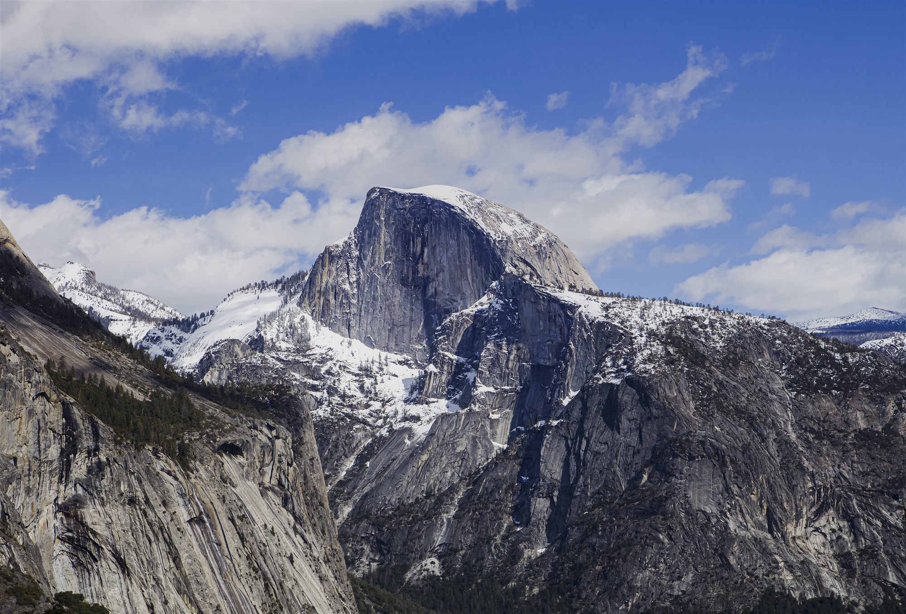
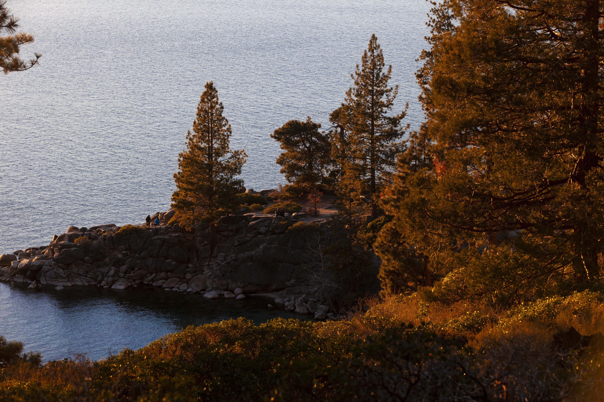
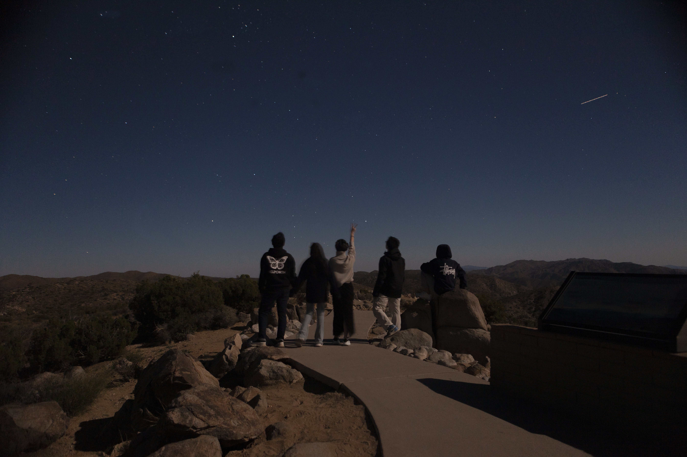
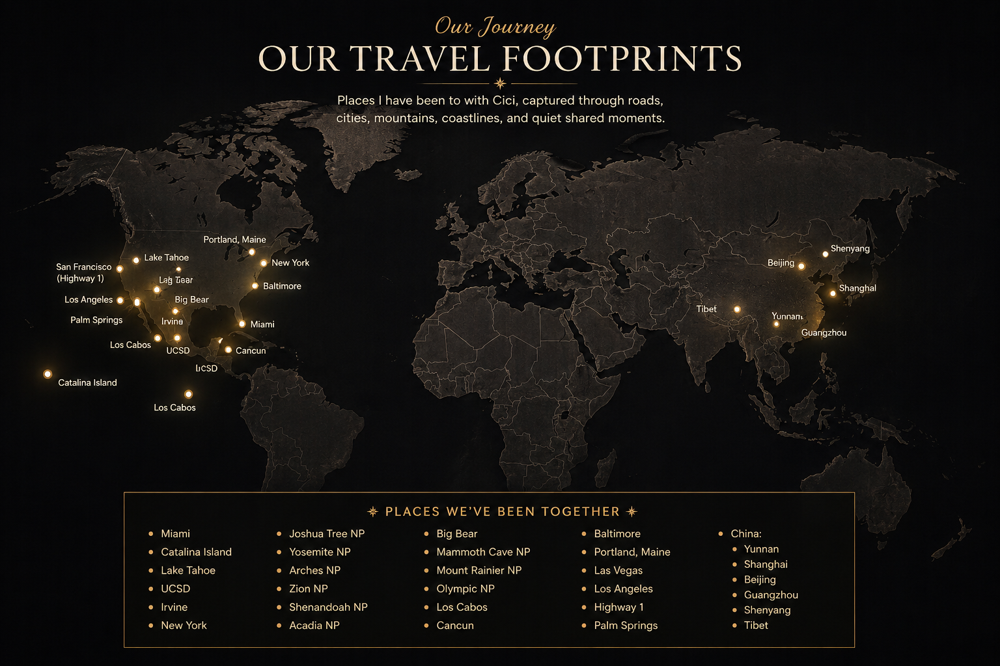

Catalog
Travel Photography Portfolio
A visual journal of landscapes, cities, roads, and memories captured through my lens.
Explore PlacesSelected Work

Morning light touching the granite valley walls.

Where the road ends, autumn colors rest beside the still lake.

Standing with friends beneath a sky full of stars in Joshua Tree.
Our Journey
Places I have been to with Cici, captured through roads, cities, mountains, coastlines, and quiet shared moments.(locations may not be 100% accurate as I use AI generate this map.)

Catalog
About
I’m interested in travel, landscapes, city scenes, and the quiet details that make a place memorable. This website is a personal catalog of my favorite moments from different places.